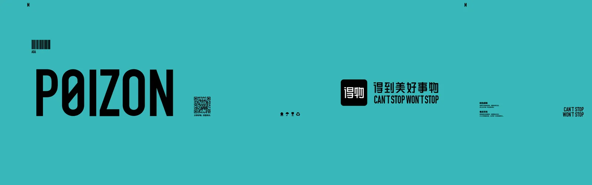
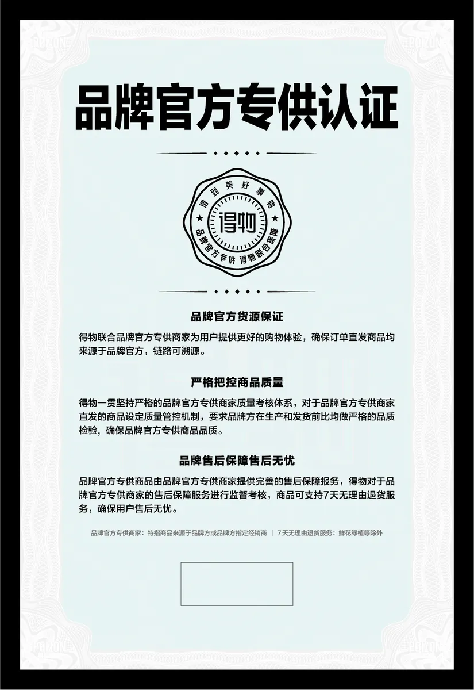

旧认知
POIZON 全员课
《HTML+：AI 时代的
工作表达新方式》
不用学编程，也能做出能讲、能点、能分享的工作成果
你有没有遇到过：内容已经写好了，但别人还是看不懂、不想看、不会用？
P02·总览
今天不学代码，学会四件事
找到一个适合 HTML 的工作场景，与 AI 共同完成真实任务。
01 什么是 HTML
当内容需要被看见、被理解、被操作时，
它就可以变成一个 HTML。
P04·定义
HTML 是一种可以被浏览器直接打开的内容容器。借助 AI，我们可以把文字、图片、数据和流程，快速变成一个可查看、可点击、可演示的工作界面。
文字图片视频动画表格图表按钮选择流程跳转简单计算
新认知
每个岗位都能借 AI 做的轻量工作界面
点一张岗位卡，看它装的是哪类工作内容。
P05·对照
同一份内容，四种打开方式
共同改稿
文档表格
一起改，一起留痕
适合还在对齐文字和数字的时候。
现场线性讲
PPT
你讲，别人顺着听
适合一次会议、一条叙事线。
固定节奏
视频
按时间播，不能停下来选
适合传播，不适合当场操作。
查看 · 选择 · 互动 · 复用
HTML
内容随操作变化 别人自己看、自己选、自己走下一步。
02 HTML 可以做什么
普通文件把内容交给你，
HTML 还可以回应你的操作。
01
装下内容
通知、流程、注意在一页
02
组织信息
先选身份再看流程
03
接收操作
点一下，页知道你是谁
04
给出回应
拿到自己的下一步
P07·四个基础动作
不是更多内容，
是会回应的内容
活动通知
本周六开放日
请选择你的身份，看对应流程。
03 工作中怎么选择
不要先问「能不能做成 HTML」，
先问「谁要用它完成什么」。
任务使用者使用方式交付形式
P09·四种高频场景
先认场景，再谈做成什么样
P10·三维度
做之前，只看这三件事
使用者
谁会打开它？在什么场合用？一个人看，还是一桌人一起点？
任务 · 只选一个场景
一件事做透。点一个，其他先放下。
是否复用
一次会，不要过度。长期用，先确认负责人：谁改、谁发、谁收场。
P11·最轻有效方案
价值不是看起来像网站，
是减少解释和重复劳动
- 先排除文档表格
还在一起改文字和数字，这样就够了。
- 先排除PPT
只要顺着一条线讲完，这样就够了。
- 先排除视频
只要按固定节奏播出去，这样就够了。
- 留下HTML
别人要自己看、自己选、自己走下一步。
三自检
04 我们的 HTML 案例
同一种能力，解决不同类型的内容。
P13·案例一 · 比较 / 体验
11 周年 T恤 + 物流箱 + 奖杯 + 防伪

物流箱待补 · 物流箱纹理 奖杯待补 · 奖杯静帧
奖杯待补 · 奖杯静帧
防伪待补 · 防伪静帧P14·案例二 · 比较选择
NONO 九款，进同一页
HTML
帮型
差别
帮型
差别
点两款，看「比较」怎么发生。
P15·案例三 · 讲清楚 / 体验
《得物业务知多少》VOL.06
第三章「我们相信什么，决定了我们是谁」。页能看，但不能按时间讲。给页加上时间、转场、声音——现场叫它视频插件。
HTML

我们相信什么，决定了我们是谁
HyperFrames
P16·三案对照
三个案例，只记三行
周年物料
原来平面稿
不够看不出材质结构
多了哪个动作拖、换、比（接收操作 + 给出回应）
NONO 九款
原来分散确认
不够成本高
多了哪个动作组织信息 + 接收操作
业务知多少
原来页能看
不够不能按时间讲
多了哪个动作时间、转场、声音
05 轮到你了
不要从「我要做一个很厉害的网站」开始。
从「我想少解释一次什么」开始。
重复解释
找不到重点
文字说不清
能变成小工具
P18·小任务
三选一，做一件能打开的事
点一个任务。下一页打开蓝龙虾。
P19·打开蓝龙虾
先填谁、什么事，再生成能打开的一版
我想把这份材料做成一个可以直接打开的 HTML。使用者是【谁】，需要完成【什么事】。请先帮我整理内容结构，再生成一个简单、清楚、容易使用的版本。
整段复制，到蓝龙虾里贴上。
- 填谁 / 什么事
- 先出能打开的一版
- 人话改到能用就停
- 过三自检
结课
未来真正重要的，不是每个人都会写代码，而是每个人都能把自己的专业判断，变成别人可以直接使用的成果。
P01 / 20
← → 空格 · F 全屏 · R 重置